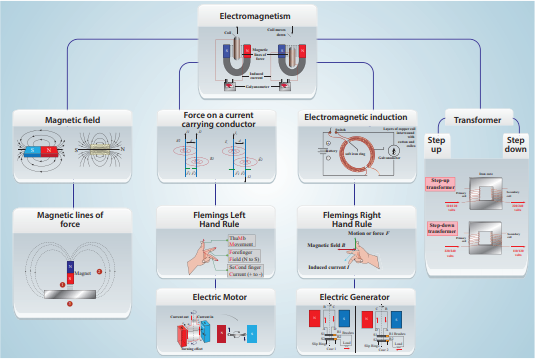
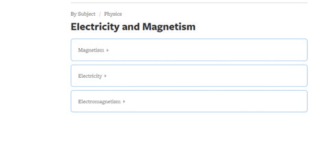
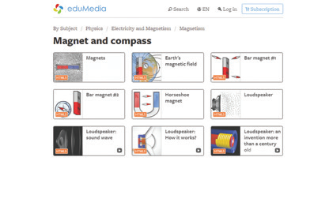
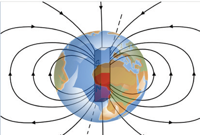
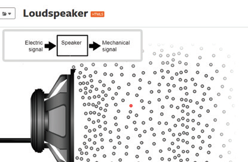
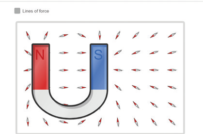

1. Which of the following converts electrical energy into mechanical energy question mark
A bracket closed Motor
B bracket closed Battery
C bracket closed Generator
D bracket closed Switch
2. Transformer works on
A bracket closed AC only
B bracket closed DC only
C bracket closed Both AC and DC
3. The part of the AC generator that passes the current from the armature coil to the external circuit is
A bracket closed field magnet
B bracket closed split rings
C bracket closed slip rings
D bracket closed brushes
4. The unit of magnetic flux density is
A bracket closed Weber
b bracket closed weber/metre
c bracket closed weber/square meter d bracket closed weber dot square meter
1. The SI Unit of magnetic field induction is dash
2. Devices which is used to convert high alternating current to low alternating current is dash
3. An electric motor converts dash
4. A device for producing electric current is dash
1. Magnetic material Bracket OPEN a bracket closed Oersted
2. Non-magnetic material Bracket OPEN b bracket closed Iron
3. Current and magnetism Bracket OPEN c bracket closed Induction
4. Electromagnetic induction Bracket OPEN d bracket closed Wood
5. Electric generator Bracket OPEN e bracket closed Faraday
1. A generator converts mechanical energy into electrical energy.
2. Magnetic field lines always repel each other and do not intersect.
3. Fleming’s Left hand rule is also known as Dynamo rule.
4. The speed of rotation of an electric motor can be increased by decreasing the area of the coil.
5. A transformer can step up direct current.
6. In a step down transformer the number of turns in primary coil is greater than that of the number of turns in the secondary coil.
1. State Fleming’s Left Hand Rule.
2. Define magnetic flux density.
3. List the main parts of an electric motor.
4. Draw and label the diagram of an AC generator.
5. State the advantages of ac over dc.
6. Differentiate step up and step down transformer.
7. A portable radio has a built in transformer so that it can work from the mains instead of batteries. Is this a step up or step down transformer question mark Give reason.
8. State Faraday’s laws of electromagnetic induction.
1. Explain the principle, construction and working of a dc motor.
2. Explain two types of transformer.
3. Draw a neat diagram of an AC generator and explain its working.
Advanced Physics by Keith Gibbs – Cambridge University Press.
Principles of physics Bracket OPEN Extended bracket closed – Halliday Resnick and Walker. Wiley publication, New Delhi.
Fundamental University Physics – M. Alonso, E. J. Finn Addimon Wesley Bracket OPEN1967bracket closed
https://science.howstuffworks.com
http://arvindguptatoys.com/films.html

Magnetism and Electromagnetism
Explore this activity to know about the various properties in magnetism

Steps
Copy and paste the link given below or type the URL in the browser. Click the option Magnet and Compass.
You can find six activities and three videos related to magnets and loudspeaker. Browse in the link:
Click any one of the six activities to simulate and understand the process.
Click any one of the three videos to understand the concepts related to loudspeaker and magnets. Try all the other activities and videos as well.




Browse in the link:
URL: http://www.edumedia-sciences.com/en/node/75-magnetism
Pictures are indicative only